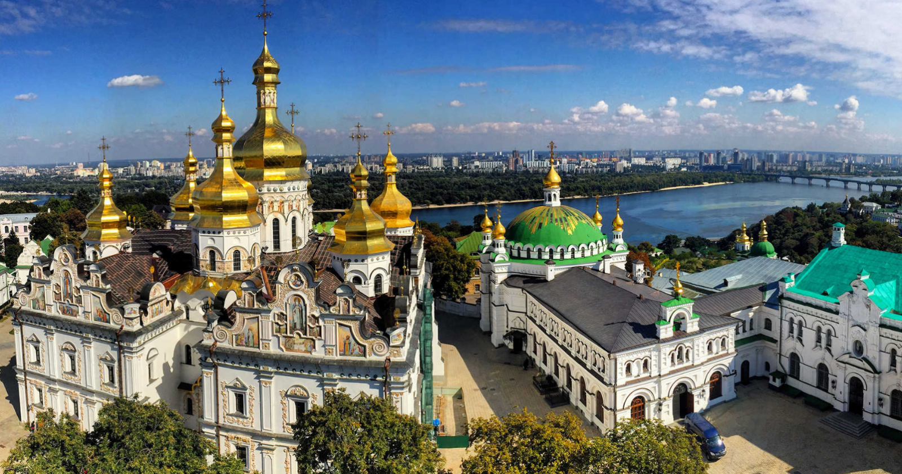

Київ - дивовижне місто, в якому буквально на кожному кроці можна
зустріти цікаві місця, і дізнатися багато нового. Найбільш давня
вулиця столиці - Володимирська, її вік уже перевалив за тисячоліття!
Найширша київська вулиця - це, звичайно ж, Хрещатик. Щоб перейти її
від одного будинку до іншого, вам доведеться подолати 75 метрів.
Найстаріше київське дерево - Дуб Вільгельма Крістера. За приблизними
підрахунками, його вік коливається в діапазоні між 600 і 700 роками.
Точно сказати важко, адже дізнатися точний вік дерева можна тільки по
річним кільцям. Ну а побачити це диво природи можна на вулиці
Осиповського. Найбільше людей живе в Деснянському районі, тут 355 000
мешканців. Ну а найменше людей живе в Печерському районі - всього 139
000. Ну а найбільший житловий масив в місті - це Троєщина, в якій
проживають 240 000 чоловік. Метро Києва - одне з найстаріших в Європі.
Найглибша станція в ньому - «Арсенальна». Щоб потрапити на неї,
потрібно буде спуститися під землю на глибину 105 метрів! Ну а ну а
честь називатися найкрасивішою станцією належить знаменитим «Золотим
воротам». Ця станція входить в топ-10 найкрасивіших у всьому світі!

Києво-Печерська лавра
Один із найбільших християнських центрів-святинь країни. Визначна
пам'ятка історії та архітектури. Заснована 1051 року як печерний
монастир за межами Києва. Свою назву отримала від печер, де оселилися
перші його мешканці. У середньовіччі був оплотом православ'я Руси.
1592 року став ставропігією Вселенського патріархату Константинополя.
1688 року став лаврою. У ранньому новому часі перетворився на центр
паломництва православних. 1994 року разом із Софійським собором
внесений до переліку Світової спадщини ЮНЕСКО.
Батьківщина-Мати
Найбільш високий пам'ятник в столиці - знаменита «Батьківщина-мати».
Ця монументальна скульптура знаходиться на території меморіального
комплексу «Музей Великої Вітчизняної Війни», і побудована в 1981 році
за проектом В.Бородія. Її висота становить цілих 102 метра, і вона
входить в топ-5 найвищих скульптур у всьому світі!